Thurday September 22, 2022
“Be curious. Read widely. Try new things. I think a lot of what people call intelligence boils down to curiosity.” - Aaron Swartz
Today
- Defining neighborhoods differently
- Assessing the statistical significance of autocorrelation
- Bivariate spatial autocorrelation
- Local indicators of spatial autocorrelation
Defining neighborhoods differently
Last time you saw how to compute autocorrelation using areal aggregated data. The procedure involves a weights matrix, which you created using the default neighborhood definition and the weighting scheme with functions from the {spdep} package.
It was noted that the magnitude of autocorrelation depends on the weighting scheme used. Other neighborhood definitions are possible and they will also influence the magnitude of the autocorrelation.
Let’s consider the historical demographic data in Mississippi counties. Import the data as a simple feature data frame and assign the geometry a geographic CRS.
if(!"police" %in% list.files(here::here("data"))) {
download.file(url = "http://myweb.fsu.edu/jelsner/temp/data/police.zip",
destfile = here::here("data", "police.zip"))
unzip(here::here("data", "police.zip"),
exdir = here::here("data"))
}
( PE.sf <- sf::st_read(dsn = here::here("data", "police"),
layer = "police") |>
sf::st_set_crs(4326) )## Reading layer `police' from data source
## `/Users/jameselsner/Desktop/ClassNotes/ASS-2022/data/police'
## using driver `ESRI Shapefile'
## Simple feature collection with 82 features and 21 fields
## Geometry type: POLYGON
## Dimension: XY
## Bounding box: xmin: -91.64356 ymin: 30.19474 xmax: -88.09043 ymax: 35.00496
## CRS: NA## Simple feature collection with 82 features and 21 fields
## Geometry type: POLYGON
## Dimension: XY
## Bounding box: xmin: -91.64356 ymin: 30.19474 xmax: -88.09043 ymax: 35.00496
## Geodetic CRS: WGS 84
## First 10 features:
## AREA PERIMETER CNTY_ CNTY_ID NAME STATE_NAME STATE_FIPS CNTY_FIPS
## 1 0.105 1.401 2129 2129 Alcorn Mississippi 28 003
## 2 0.111 1.485 2130 2130 Tishomingo Mississippi 28 141
## 3 0.116 1.519 2131 2131 Tippah Mississippi 28 139
## 4 0.105 1.478 2132 2132 Benton Mississippi 28 009
## 5 0.127 1.774 2133 2133 De Soto Mississippi 28 033
## 6 0.181 1.911 2134 2134 Marshall Mississippi 28 093
## 7 0.119 2.146 2155 2155 Tunica Mississippi 28 143
## 8 0.103 1.571 2171 2171 Tate Mississippi 28 137
## 9 0.106 1.394 2176 2176 Prentiss Mississippi 28 117
## 10 0.109 1.493 2199 2199 Union Mississippi 28 145
## FIPS FIPSNO POLICE POP TAX TRANSFER INC CRIME UNEMP OWN COLLEGE WHITE
## 1 28003 28003 706 32500 122 12428 8206 43 7 70 23 89
## 2 28141 28141 247 19100 112 7278 6666 316 8 73 18 96
## 3 28139 28139 296 18800 93 8606 6865 5 7 71 18 84
## 4 28009 28009 116 8400 100 3494 6083 24 12 75 16 62
## 5 28033 28033 1063 56400 116 18555 8731 36 6 77 26 82
## 6 28093 28093 549 30900 87 10370 5825 316 11 71 22 47
## 7 28143 28143 291 9500 153 5354 6019 42 15 43 18 27
## 8 28137 28137 444 20500 137 13783 7837 20 8 67 29 61
## 9 28117 28117 455 24400 118 14650 6361 41 6 74 20 89
## 10 28145 28145 364 21400 117 8207 7530 46 5 73 22 86
## COMMUTE geometry
## 1 8 POLYGON ((-88.35416 34.7626...
## 2 8 POLYGON ((-88.32171 34.4693...
## 3 15 POLYGON ((-88.72614 34.6048...
## 4 41 POLYGON ((-89.23874 34.5935...
## 5 2 POLYGON ((-90.20186 34.7297...
## 6 12 POLYGON ((-89.66407 34.5659...
## 7 3 POLYGON ((-90.19978 34.5617...
## 8 11 POLYGON ((-89.71541 34.5659...
## 9 23 POLYGON ((-88.32171 34.4693...
## 10 20 POLYGON ((-89.24072 34.5017...Variables in the simple feature data frame include police expenditures (POLICE), crime (CRIME), income (INC), unemployment (UNEMP) and other socio-economic characteristics across Mississippi at the county level. Police expenditures are per person 1982 (dollars per person). Personal income is per person in 1982 (dollars per person). Crime is the number of serious crimes per 100,000 person in 1981. Unemployment is percent of people looking for work in 1980.
The geometries are polygons that define the county borders.
library(ggplot2)
ggplot(data = PE.sf) +
geom_sf()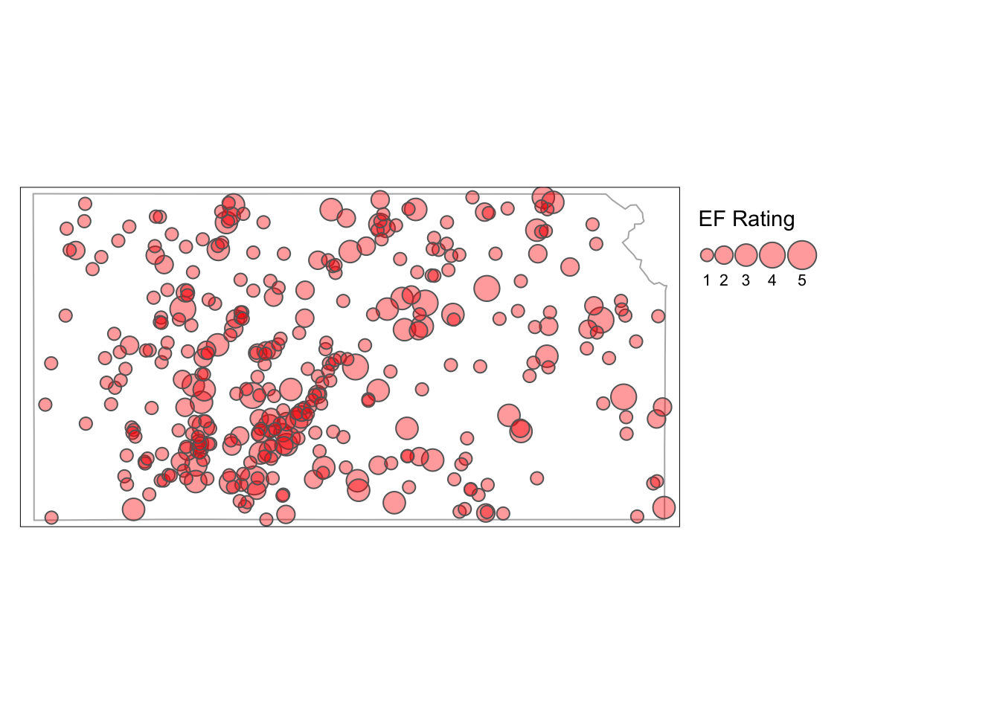
To estimate autocorrelation for any variable in the data frame, you need to first assign the neighbors and weights for each region.
The default options in the spdep::poly2nb() and spdep::nb2listw() result in neighbors defined by ‘queen’ contiguity (polygon intersections can include a single point) and weights defined by row standardization (the sum of the weights equals the number of regions).
nbs <- spdep::poly2nb(PE.sf)
wts <- spdep::nb2listw(nbs)Alternatively you can specify the number of neighbors and then assign neighbors based on proximity (closeness). Here you first extract the coordinates of the polygon centroids as a matrix.
coords <- PE.sf |>
sf::st_centroid() |>
sf::st_coordinates()## Warning in st_centroid.sf(PE.sf): st_centroid assumes attributes are constant
## over geometries of xhead(coords)## X Y
## 1 -88.56938 34.88746
## 2 -88.23073 34.74665
## 3 -88.89928 34.77600
## 4 -89.17942 34.82323
## 5 -89.98973 34.88099
## 6 -89.49699 34.76984Then use the spdep::knearneigh() function on the coordinate matrix and specify the number of neighbors with the k = argument. Here you set it to six. That is, allow each county to have 6 closest neighbors.
Since the CRS is geographic you need to include the longlat = TRUE argument so distances are calculated using great circles.
knn <- spdep::knearneigh(coords,
k = 6,
longlat = TRUE)
names(knn)## [1] "nn" "np" "k" "dimension" "x"head(knn$nn)## [,1] [,2] [,3] [,4] [,5] [,6]
## [1,] 9 3 2 4 10 14
## [2,] 9 1 16 3 14 10
## [3,] 4 10 1 9 6 14
## [4,] 3 6 10 1 11 9
## [5,] 8 7 6 12 11 4
## [6,] 4 8 11 5 3 10The output is a list of five elements with the first element a matrix with the row dimension the number of counties and the column dimension the number of neighbors.
Note that by using distance to define neighbors the matrix is not symmetric. For example, county 3 is a neighbor of county 2, but county 2 is not a neighbor of county 3.
Certain spatial models require the neighbor matrix to be symmetric. That is if region X is a neighbor of region Y then region Y must be a neighbor of region X.
You turn this matrix into a neighbor object (class nb) with the spdep::knn2nb() function.
nbs2 <- spdep::knn2nb(knn)
summary(nbs2)## Neighbour list object:
## Number of regions: 82
## Number of nonzero links: 492
## Percentage nonzero weights: 7.317073
## Average number of links: 6
## Non-symmetric neighbours list
## Link number distribution:
##
## 6
## 82
## 82 least connected regions:
## 1 2 3 4 5 6 7 8 9 10 11 12 13 14 15 16 17 18 19 20 21 22 23 24 25 26 27 28 29 30 31 32 33 34 35 36 37 38 39 40 41 42 43 44 45 46 47 48 49 50 51 52 53 54 55 56 57 58 59 60 61 62 63 64 65 66 67 68 69 70 71 72 73 74 75 76 77 78 79 80 81 82 with 6 links
## 82 most connected regions:
## 1 2 3 4 5 6 7 8 9 10 11 12 13 14 15 16 17 18 19 20 21 22 23 24 25 26 27 28 29 30 31 32 33 34 35 36 37 38 39 40 41 42 43 44 45 46 47 48 49 50 51 52 53 54 55 56 57 58 59 60 61 62 63 64 65 66 67 68 69 70 71 72 73 74 75 76 77 78 79 80 81 82 with 6 linksIf you include the argument sym = TRUE in the knn2nb() function then it forces the neighbor matrix to be symmetric.
nbs3 <- spdep::knn2nb(knn,
sym = TRUE)
summary(nbs3)## Neighbour list object:
## Number of regions: 82
## Number of nonzero links: 568
## Percentage nonzero weights: 8.447353
## Average number of links: 6.926829
## Link number distribution:
##
## 6 7 8 9 10
## 37 25 13 3 4
## 37 least connected regions:
## 1 2 5 6 7 8 13 16 18 21 22 28 31 33 34 40 42 44 45 46 48 49 50 54 57 59 62 63 65 73 74 76 77 78 80 81 82 with 6 links
## 4 most connected regions:
## 10 19 66 70 with 10 linksThe result shows that six is now the minimum number of nearest neighbors with some counties having has many as 10 neighbors to guarantee symmetry.
Compare the default adjacency neighborhoods with the nearest-neighbor neighborhoods.
plot(sf::st_geometry(PE.sf), border = "grey")
plot(nbs, coords, add = TRUE)
plot(sf::st_geometry(PE.sf), border = "grey")
plot(nbs2, coords, add = TRUE)
Toggle between the plots.
A difference between the two neighborhoods is the number of links on counties along the borders. The nearest-neighbor defined neighborhoods have more links. Note: when neighbors are defined by proximity counties can share a border but they still may not be neighbors.
Your choice of neighbors is based on domain specific knowledge. If the process you are interested in can be described by a dispersal mechanism then proximity definition might be the right choice for defining neighbors. If the process can be described by a border diffusion mechanism then contiguity might be the right choice.
Create weight matrices for these alternative neighborhoods using the same spdep::nb2listw() function.
wts2 <- spdep::nb2listw(nbs2)
wts3 <- spdep::nb2listw(nbs3)You compute Moran’s I for the percentage of white people variable (WHITE) with the moran() function separately for the three different weight matrices.
spdep::moran(PE.sf$WHITE,
listw = wts,
n = length(nbs),
S0 = spdep::Szero(wts))## $I
## [1] 0.5634778
##
## $K
## [1] 2.300738spdep::moran(PE.sf$WHITE,
listw = wts2,
n = length(nbs2),
S0 = spdep::Szero(wts2))## $I
## [1] 0.5506132
##
## $K
## [1] 2.300738spdep::moran(PE.sf$WHITE,
listw = wts3,
n = length(nbs3),
S0 = spdep::Szero(wts3))## $I
## [1] 0.5592557
##
## $K
## [1] 2.300738Values of Moran’s I are constrained between -1 and +1. In this case the neighborhood definition has little or no impact on inferences made about spatial autocorrelation. The kurtosis is between 2 and 4 consistent with a set of values from a normal distribution.
In a similar way you compute the Geary’s C statistic.
spdep::geary(PE.sf$WHITE,
listw = wts,
n = length(nbs),
S0 = spdep::Szero(wts),
n1 = length(nbs) - 1)## $C
## [1] 0.4123818
##
## $K
## [1] 2.300738Values of Geary’s C range between 0 and 2 with values less than one indicating positive autocorrelation.
If the values of Moran’s I and Geary’s C result in different interpretations about the amount of clustering then it is a good idea to examine local variations in autocorrelation.
Assessing the statistical significance of autocorrelation
Attribute values randomly placed across a spatial domain will result in some autocorrelation. Statistical tests provide a way to guard against being fooled by this randomness. For example, claiming a ‘hot spot’ when none exists. In statistical parlance, is the value of Moran’s I significant with respect to the null hypothesis of no autocorrelation?
One way to answer this question is to draw an uncertainty band on the regression line in a Moran scatter plot. If a horizontal line can be placed entirely within the band then the slope (Moran’s I) is not significant against the null hypothesis of no autocorrelation.
More formally the question is answered by comparing the standard deviate (\(z\) value) of the I statistic to the appropriate value from a standard normal distribution. This is done using the spdep::moran.test() function, where the \(z\) value is the difference between I and the expected value of I divided by the square root of the variance of I.
The function takes a variable name or numeric vector and a spatial weights list object in that order. The argument randomisation = FALSE means the variance of I is computed under the assumption of normally distributed unemployment (UNEMP) rates.
( mt <- spdep::moran.test(PE.sf$UNEMP,
listw = wts,
randomisation = FALSE) )##
## Moran I test under normality
##
## data: PE.sf$UNEMP
## weights: wts
##
## Moran I statistic standard deviate = 3.4102, p-value = 0.0003246
## alternative hypothesis: greater
## sample estimates:
## Moran I statistic Expectation Variance
## 0.217503452 -0.012345679 0.004542775Moran’s I is .218 with a variance of .0045. The \(z\) value for I is 3.41 giving a \(p\)-value of .0003 under the null hypothesis of no autocorrelation. Thus you reject the null hypothesis and conclude there is weak but significant autocorrelation in unemployment rates across Mississippi at the county level.
Outputs from the spdep::moran.test() function are in the form of a list.
str(mt)## List of 6
## $ statistic : Named num 3.41
## ..- attr(*, "names")= chr "Moran I statistic standard deviate"
## $ p.value : num 0.000325
## $ estimate : Named num [1:3] 0.2175 -0.01235 0.00454
## ..- attr(*, "names")= chr [1:3] "Moran I statistic" "Expectation" "Variance"
## $ alternative: chr "greater"
## $ method : chr "Moran I test under normality"
## $ data.name : chr "PE.sf$UNEMP \nweights: wts \n"
## - attr(*, "class")= chr "htest"The list element called estimate is a vector of length three containing Moran’s I, the expected value of Moran’s I under the assumption of no autocorrelation, and the variance of Moran’s I.
The \(z\) value is the difference between I and it’s expected value divided by the square root of the variance.
( mt$estimate[1] - mt$estimate[2] ) / sqrt(mt$estimate[3])## Moran I statistic
## 3.410219The \(p\)-value is the area under a standard normal distribution curve to the right (lower.tail = FALSE) of 3.4102 (mt$statistic).
pnorm(mt$statistic,
lower.tail = FALSE)## Moran I statistic standard deviate
## 0.000324554curve(dnorm(x), from = -4, to = 4, lwd = 2)
abline(v = mt$statistic, col = 'red')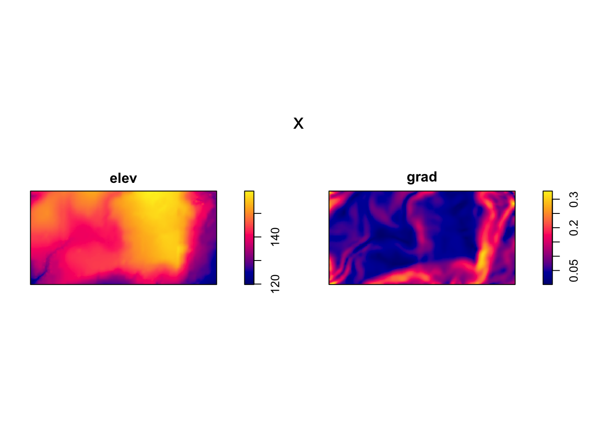
So about .03% of the area lies to the right of the red line.
Recall the \(p\)-value summarizes the evidence in support of the null hypothesis. The smaller the \(p\)-value, the less evidence there is in support of the null hypothesis.
In this case it is the probability that the county unemployment rates could have been arranged at random across the state if the null hypothesis is true. The small \(p\)-value tells you that the spatial arrangement of the data is unusual with respect to the null hypothesis.
The interpretation of the \(p\)-value is stated as evidence AGAINST the null hypothesis. This is because interest lies in the null hypothesis being untenable. A \(p\)-value less than .01 is said to provide convincing evidence against the null, a \(p\)-value between .01 and .05 is said to provide moderate evidence against the null, and a \(p\)-value between .05 and .15 is said to be suggestive, but inconclusive in providing evidence against the null. A \(p\)-value greater than .15 is said to provide no evidence against the null.
Note you do not interpret “no evidence” as “no effect (no autocorrelation)”.
Under the assumption of normal distributed and uncorrelated data, the expected value for Moran’s I is -1/(n-1) where n is the number of regions.
A check on the distribution of unemployment rates indicates that normality is somewhat suspect. A good way to check the normality assumption is to use the sm.density() function from the {sm} package.
if(!require(sm)) install.packages("sm", repos = "http://cran.us.r-project.org")## Loading required package: sm## Package 'sm', version 2.2-5.7: type help(sm) for summary informationsm::sm.density(PE.sf$UNEMP,
model = "Normal",
xlab = "Unemployment Rates")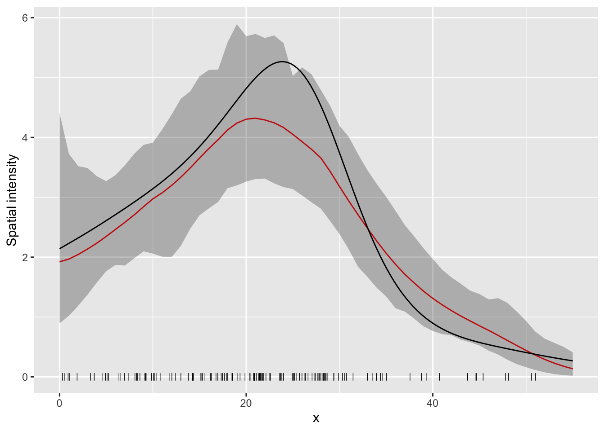
The unemployment rates are less “peaked” (lower kurtosis) than a normal distribution. In this case it is better to use the default randomisation = TRUE argument.
Further, the assumptions underlying Moran’s test are sensitive to the form of the graph of neighbor relationships and other factors so results should be checked against a test that involves permutations.
A random sampling approach to inference is made with the spdep::moran.mc() function. MC stands for Monte Carlo which refers to the city of Monte Carlo in Monaco famous for its gambling casinos.
The name of the data vector and the weights list object (listw) are required as is the number of permutations (nsim). Each permutation is a random rearrangement of the unemployment rates across the counties. This removes the spatial autocorrelation but keeps the non-spatial distribution of the unemployment rates. The neighbor topology and weights remain the same.
For each permutation (random shuffle of the data values), I is computed and saved. The \(p\)-value is obtained as the ratio of the number of permuted I values greater or exceeding the observed I over the number of permutation plus one. In the case where there are 5 permuted I values greater or equal to the observed value based on 99 simulations, the \(p\)-value is 5/(99 + 1) = .05.
For example, if you want inference on I using 9999 permutations type
set.seed(40453)
( mP <- spdep::moran.mc(PE.sf$UNEMP,
listw = wts,
nsim = 9999) )##
## Monte-Carlo simulation of Moran I
##
## data: PE.sf$UNEMP
## weights: wts
## number of simulations + 1: 10000
##
## statistic = 0.2175, observed rank = 9991, p-value = 9e-04
## alternative hypothesis: greaterNine of the permutations yield a Moran’s I greater than .218, hence the \(p\)-value as evidence in support of the null hypothesis (the true value for Moran’s I is zero) is .0009.
Note: you initiate the random number generator with a seed value (any will do) so that the set of random permutations of the values across the domain will be the same each time you run this code chunk. This is important for reproducibility. The default random number generator seed value is determined from the current time (internal clock) and so no random permutations will be identical. To control the seed use the set.seed() function.
The values of I computed for each permutation are saved in the vector mP$res.
head(mP$res)## [1] -0.03052409 0.05019765 0.01346706 0.03189984 -0.07625158 -0.07398726tail(mP$res)## [1] 0.01973190 -0.01000012 -0.04472215 -0.12488347 -0.01269481 0.21750345The last value in the vector is I computed using the data in the correct counties. The \(p\)-value as evidence in support of the null hypothesis that I is zero is given as
sum(mP$res > mP$res[10000])/9999## [1] 0.00090009A density graph displays the distribution of permuted I’s.
df <- data.frame(mp = mP$res[-10000])
ggplot(data = df,
mapping = aes(mp)) +
geom_density() +
geom_rug() +
geom_vline(xintercept = mP$res[10000],
color = "red", size = 2) +
theme_minimal()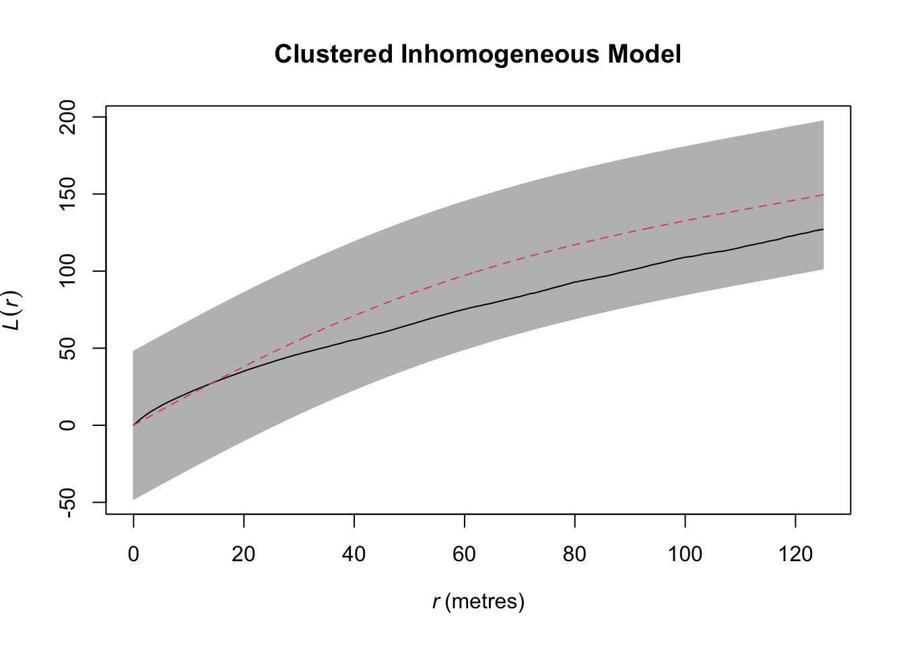
The density curve is centered just to the left of zero consistent with the theoretical expectation (mean).
What to do with the knowledge that the unemployment rates have significant autocorrelation? By itself, not much, but it can provide notice that something might be going on in certain regions (hot spot analysis).
The knowledge is useful after other factors are considered. In the language of statistics, knowledge of significant autocorrelation in the model residuals can help you build a better model.
Bivariate spatial autocorrelation
The idea of spatial autocorrelation can be extended to two variables. It is motivated by the fact that aspatial bi-variate association measures, like Pearson’s correlation, do not recognize the spatial arrangement of the regions.
Consider the correlation between police expenditure (POLICE) and the amount of crime (CRIME) in the police expenditure data set.
police <- PE.sf$POLICE
crime <- PE.sf$CRIME
cor.test(police, crime, method = "pearson")##
## Pearson's product-moment correlation
##
## data: police and crime
## t = 6.2916, df = 80, p-value = 1.569e-08
## alternative hypothesis: true correlation is not equal to 0
## 95 percent confidence interval:
## 0.4094516 0.7043990
## sample estimates:
## cor
## 0.5753377You note a significant (direct) correlation (\(p\)-value < .01) exists between these two variables.
But you also note some significant spatial autocorrelation in each of the variables separately.
spdep::moran.test(police,
listw = wts)##
## Moran I test under randomisation
##
## data: police
## weights: wts
##
## Moran I statistic standard deviate = 1.7899, p-value = 0.03674
## alternative hypothesis: greater
## sample estimates:
## Moran I statistic Expectation Variance
## 0.087185424 -0.012345679 0.003092257spdep::moran.test(crime,
listw = wts)##
## Moran I test under randomisation
##
## data: crime
## weights: wts
##
## Moran I statistic standard deviate = 2.2072, p-value = 0.01365
## alternative hypothesis: greater
## sample estimates:
## Moran I statistic Expectation Variance
## 0.103588680 -0.012345679 0.002758842The Lee statistic integrates the Pearson correlation as an aspatial bi-variate association metric with Moran’s I as a uni-variate spatial autocorrelation metric. The formula is \[ L(x,y) = \frac{n}{\sum_{i=1}^{n}(\sum_{j=1}^{n}w_{ij})^2} \frac{\sum_{i=1}^{n}(\sum_{j=1}^{n}w_{ij}(x_i-\bar{x})) ((\sum_{j=1}^{n}w_{ij}(y_j-\bar{y}))}{\sqrt{\sum_{i=1}^{n}(x_i - \bar{x})^2} \sqrt{\sum_{i=1}^{n}(y_i - \bar{y})^2}} \]
The formula is implemented in the spdep::lee() function where the first two arguments are the variables of interest and you need to include the weights matrix and the number of regions. The output from this function is a list of two with the first being the value of Lee’s statistic (L).
spdep::lee(crime, police,
listw = wts,
n = length(nbs))$L## [1] 0.1306991Values of L range between -1 and +1 with the value here of .13 indicating relatively weak bi-variate spatial autocorrelation between crime and police expenditures. Statistically you infer that crime in a county has some influence on police expenditure in that county and in the neighboring counties, but not much.
The crime and police variables are not adequately described by a normal distribution.
par(mfrow = c(2, 1))
sm::sm.density(crime, model = "normal")
sm::sm.density(police, model = "normal")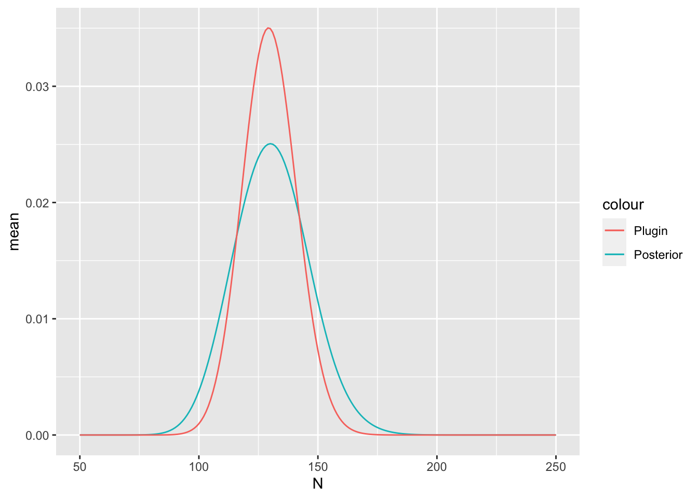
Thus you perform a non-parametric test on the bi-variate spatial autocorrelation with the spdep::lee.mc() function. The crime and police expenditure values are randomly permuted and values of L are computed for each permutation.
spdep::lee.mc(crime, police,
listw = wts,
nsim = 999)##
## Monte-Carlo simulation of Lee's L
##
## data: crime , police
## weights: wts
## number of simulations + 1: 1000
##
## statistic = 0.1307, observed rank = 760, p-value = 0.24
## alternative hypothesis: greaterBased on a \(p\)-value that exceeds .05 you conclude that there is no significant bi-variate spatial autocorrelation between crime and police expenditure in these data.
Local indicators of spatial autocorrelation
The Moran’s I statistic was first used in the 1950s. Localization of the statistic was presented by Luc Anselin in 1995 (Anselin, L. 1995. Local indicators of spatial association, Geographical Analysis, 27, 93–115).
Earlier you saw the raster::MoranLocal() function from the {raster} package returns a raster of local Moran’s I values.
Local I is a deconstruction of global I where geographic proximity is used in two ways. (1) to define and weight neighbors and (2) to determine the spatial scale over which I is computed.
Using queen’s contiguity you determine the neighborhood topology and the weights for the police expenditure data from Mississippi. Here you print them in the full matrix form with the spdep::list2mat() function.
round(spdep::listw2mat(wts)[1:5, 1:10], 2)## [,1] [,2] [,3] [,4] [,5] [,6] [,7] [,8] [,9] [,10]
## 1 0.00 0.33 0.33 0.00 0 0.00 0.00 0.00 0.33 0.00
## 2 0.33 0.00 0.00 0.00 0 0.00 0.00 0.00 0.33 0.00
## 3 0.25 0.00 0.00 0.25 0 0.00 0.00 0.00 0.25 0.25
## 4 0.00 0.00 0.33 0.00 0 0.33 0.00 0.00 0.00 0.33
## 5 0.00 0.00 0.00 0.00 0 0.33 0.33 0.33 0.00 0.00The matrix shows that the first county has three neighbors 2, 3, and 9 and each get a weight of 1/3. The third county has four neighbors 1, 4, 9 and 10 and each gets a weight of 1/4.
Compute local Moran’s I on the percentage of white people using the spdep::localmoran() function. Two arguments are needed (1) the attribute variable for which you want to compute local correlation and (2) the weights matrix as a list object.
Ii_stats <- spdep::localmoran(PE.sf$WHITE,
listw = wts)
str(Ii_stats)## 'localmoran' num [1:82, 1:5] 2.28138 2.97475 1.31244 0.00231 -1.03216 ...
## - attr(*, "dimnames")=List of 2
## ..$ : chr [1:82] "1" "2" "3" "4" ...
## ..$ : chr [1:5] "Ii" "E.Ii" "Var.Ii" "Z.Ii" ...
## - attr(*, "call")= language spdep::localmoran(x = PE.sf$WHITE, listw = wts)
## - attr(*, "quadr")='data.frame': 82 obs. of 3 variables:
## ..$ mean : Factor w/ 4 levels "Low-Low","High-Low",..: 4 4 4 4 2 3 1 1 4 4 ...
## ..$ median: Factor w/ 4 levels "Low-Low","High-Low",..: 4 4 4 3 2 3 1 1 4 4 ...
## ..$ pysal : Factor w/ 4 levels "Low-Low","High-Low",..: 4 4 4 4 2 3 1 1 4 4 ...The local I is stored in the first column of a matrix where the rows are the counties. The other columns are the expected value for I, the variance of I, the \(z\) value and the \(p\)-value. For example, the local I statistics from the first county are given by typing
head(Ii_stats)## Ii E.Ii Var.Ii Z.Ii Pr(z != E(Ii))
## 1 2.281375143 -2.748824e-02 7.124247e-01 2.735450 0.006229509
## 2 2.974750377 -4.354053e-02 1.109833e+00 2.865051 0.004169423
## 3 1.312440365 -1.827251e-02 3.539514e-01 2.236725 0.025304339
## 4 0.002313108 -2.007906e-07 5.351069e-06 1.000031 0.317295645
## 5 -1.032155817 -1.511126e-02 3.966295e-01 -1.614907 0.106330864
## 6 -0.493034653 -8.356103e-03 1.291002e-01 -1.348933 0.177358557Because these local values must average to the global value (when using row standardized weights), they can take on values outside the range between -1 and 1. A summary() method on the first column of the Li object gives statistics from the non-spatial distribution of I’s.
summary(Ii_stats[, 1])## Min. 1st Qu. Median Mean 3rd Qu. Max.
## -1.03216 0.01733 0.26984 0.56348 1.05945 2.97475You map the values by first attaching the matrix columns of interest to the simple feature data frame. Here you attach Ii, Var, and Pi.
PE.sf$Ii <- Ii_stats[, 1]
PE.sf$Vi <- Ii_stats[, 3]
PE.sf$Pi <- Ii_stats[, 5]Then using the {ggplot2} syntax.
( g1 <- ggplot(data = PE.sf) +
geom_sf(aes(fill = Ii)) +
scale_fill_gradient2(low = "green",
high = "blue") )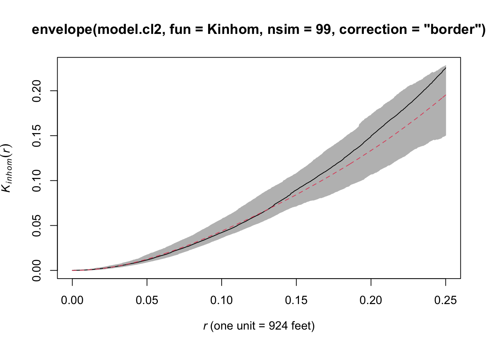
You also map out the variances.
ggplot(data = PE.sf) +
geom_sf(aes(fill = Vi)) +
scale_fill_gradient()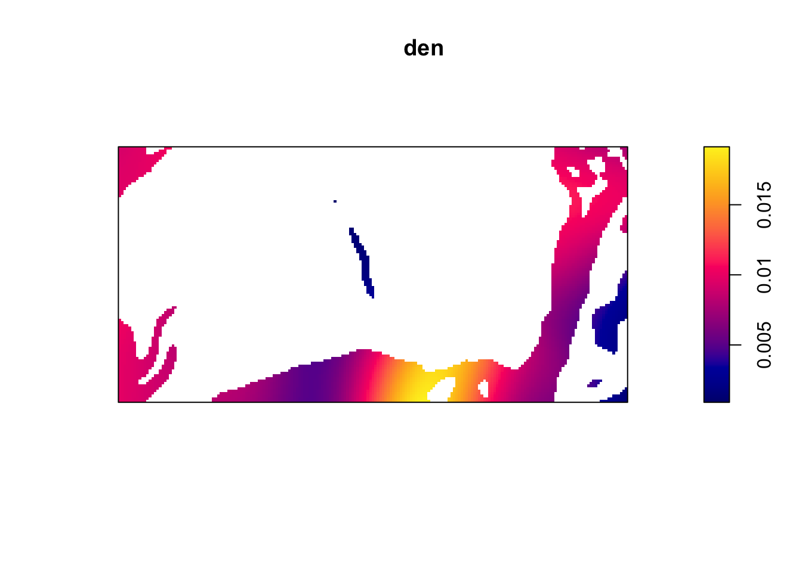
Variances are larger for counties near the boundaries as the sample sizes are smaller.
Compare the map of local autocorrelation with a map of percent white.
( g2 <- ggplot(data = PE.sf) +
geom_sf(aes(fill = WHITE)) +
scale_fill_gradient(low = "black",
high = "white") )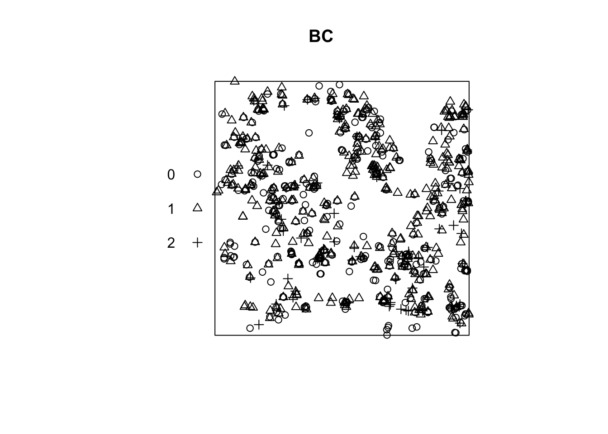
Plot them together.
library(patchwork)
g1 + g2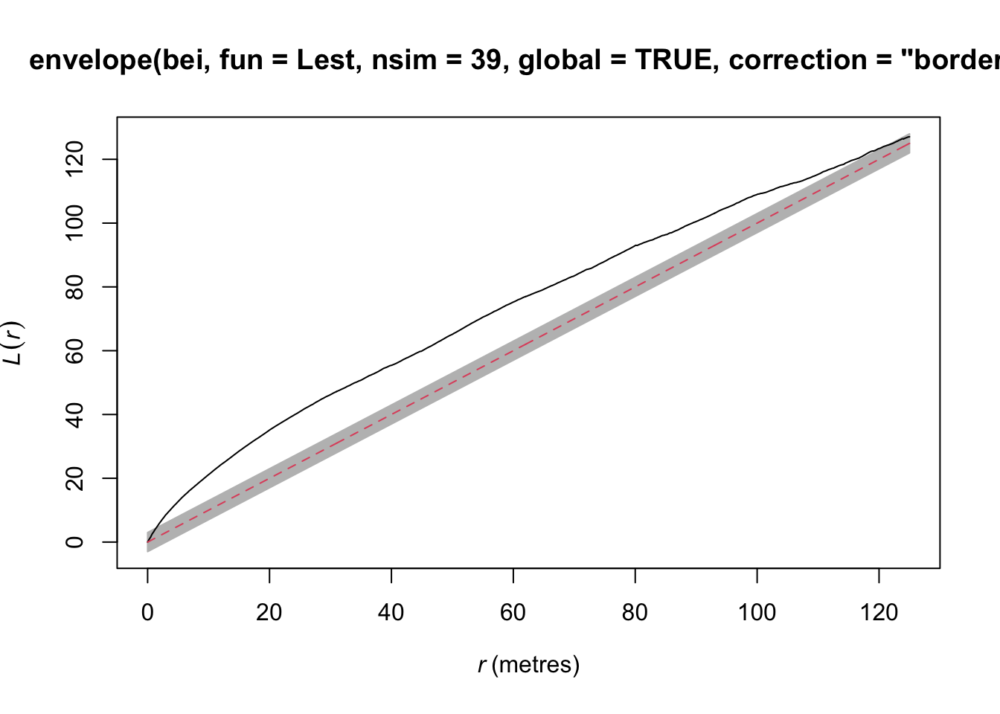
Areas where percent white is high over the northeast are areas with the largest spatial correlation. Other areas of high spatial correlation include the Mississippi Valley and in the south. Note the county with the most negative spatial correlation is the county in the northwest with a fairly high percentage of whites neighbored by counties with much lower percentages of whites.
Local values of Lee’s bi-variate spatial autocorrelation are available from the spdep::lee() function.
lee_stat <- spdep::lee(crime, police,
listw = wts,
n = length(nbs))
PE.sf$localL <- lee_stat$localL
tmap::tm_shape(PE.sf) +
tmap::tm_fill("localL",
title = "") +
tmap::tm_borders(col = "gray70") +
tmap::tm_layout(title = "Local bi-variate spatial autocorrelation",
legend.outside = TRUE)## Variable(s) "localL" contains positive and negative values, so midpoint is set to 0. Set midpoint = NA to show the full spectrum of the color palette.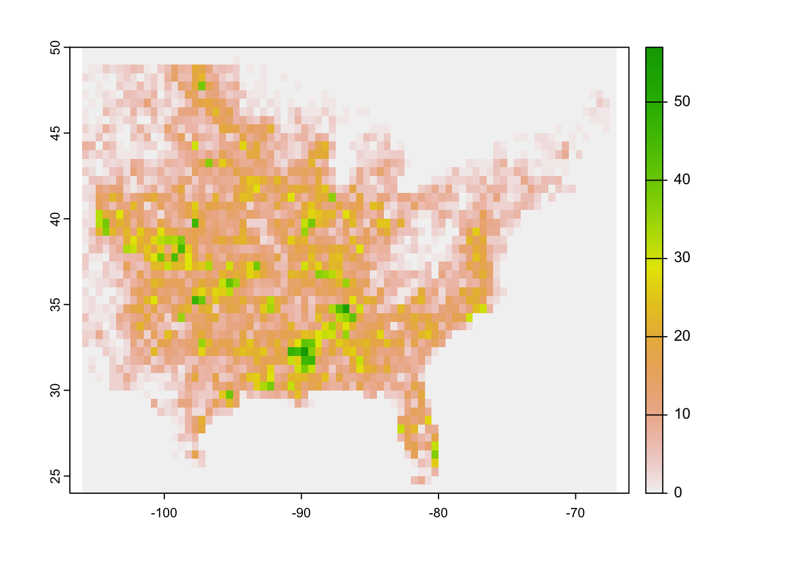
Areas in dark green indicate where the correlation between crime and policing is most influenced by neighboring crime and policing.
Population and tornado reports
Is the frequency of tornado reports correlated with the number of people in a region? Might this correlation extend to the number of people in neighboring region?
To answer these questions you quantify the non-spatial correlation and the bi-variate spatial autocorrelation between tornado occurrences and population. To keep this manageable you focus on one state (Iowa).
Start by getting the U.S. Census data with functions from the {tidycensus} package. The get_decennial() function grants access to the 1990, 2000, and 2010 decennial US Census data and the get_acs() function grants access to the 5-year American Community Survey data. For example, here is how you get county-level population for Iowa.
Counties.sf <- tidycensus::get_acs(geography = "county",
variables = "B02001_001E",
state = "IA",
geometry = TRUE)## Getting data from the 2015-2019 5-year ACS## Downloading feature geometry from the Census website. To cache shapefiles for use in future sessions, set `options(tigris_use_cache = TRUE)`.##
|
| | 0%
|
| | 1%
|
|= | 1%
|
|= | 2%
|
|== | 2%
|
|== | 3%
|
|=== | 5%
|
|==== | 5%
|
|==== | 6%
|
|===== | 7%
|
|===== | 8%
|
|====== | 8%
|
|====== | 9%
|
|========= | 13%
|
|============= | 19%
|
|============== | 21%
|
|================= | 24%
|
|================== | 25%
|
|================== | 26%
|
|=================== | 27%
|
|=================== | 28%
|
|==================== | 28%
|
|==================== | 29%
|
|===================== | 29%
|
|===================== | 30%
|
|===================== | 31%
|
|====================== | 31%
|
|====================== | 32%
|
|======================= | 33%
|
|======================= | 34%
|
|======================== | 34%
|
|======================== | 35%
|
|========================= | 35%
|
|========================= | 36%
|
|========================== | 37%
|
|========================== | 38%
|
|=========================== | 39%
|
|============================= | 42%
|
|============================== | 43%
|
|================================ | 45%
|
|================================ | 46%
|
|================================= | 47%
|
|====================================== | 55%
|
|======================================= | 56%
|
|============================================ | 63%
|
|============================================== | 65%
|
|============================================== | 66%
|
|=============================================== | 67%
|
|================================================ | 68%
|
|================================================ | 69%
|
|================================================== | 71%
|
|================================================== | 72%
|
|=================================================== | 72%
|
|==================================================== | 74%
|
|===================================================== | 75%
|
|====================================================== | 77%
|
|======================================================= | 79%
|
|======================================================== | 80%
|
|========================================================= | 82%
|
|=========================================================== | 84%
|
|============================================================ | 86%
|
|================================================================== | 94%
|
|=================================================================== | 96%
|
|======================================================================| 100%The code returns a simple feature data frame with county borders as multi-polygons. The variable B02001_001E is the 2015-2019 population estimate in each county within the state.
Next get the tornado data and count the number of tracks by county. A single track can intersect more than one county.
Torn.sf <- sf::st_read(dsn = here::here("data", "1950-2020-torn-aspath"),
layer = "1950-2020-torn-aspath") |>
sf::st_transform(crs = sf::st_crs(Counties.sf)) |>
dplyr::filter(yr >= 2015)## Reading layer `1950-2020-torn-aspath' from data source
## `/Users/jameselsner/Desktop/ClassNotes/ASS-2022/data/1950-2020-torn-aspath'
## using driver `ESRI Shapefile'
## Simple feature collection with 66244 features and 22 fields
## Geometry type: LINESTRING
## Dimension: XY
## Bounding box: xmin: -163.53 ymin: 17.7212 xmax: -64.7151 ymax: 61.02
## Geodetic CRS: WGS 84( TorCounts.df <- Torn.sf |>
sf::st_intersection(Counties.sf) |>
sf::st_drop_geometry() |>
dplyr::group_by(GEOID) |>
dplyr::summarize(nT = dplyr::n()) )## Warning: attribute variables are assumed to be spatially constant throughout all
## geometries## # A tibble: 89 × 2
## GEOID nT
## <chr> <int>
## 1 19001 8
## 2 19003 4
## 3 19007 6
## 4 19011 7
## 5 19013 4
## 6 19015 7
## 7 19017 1
## 8 19019 4
## 9 19021 1
## 10 19023 1
## # … with 79 more rowsNext join the counts to the simple feature data frame.
Counties.sf <- Counties.sf |>
dplyr::left_join(TorCounts.df,
by = "GEOID") |>
dplyr::mutate(nT = tidyr::replace_na(nT, 0)) |>
dplyr::mutate(Area = sf::st_area(Counties.sf),
rate = nT/Area/(2020 - 2015 + 1) * 10^10,
lpop = log10(estimate))Note that some counties have no tornadoes and the dplyr::left_join() returns a value of NA for those. You use dplyr::mutate() with tidyr::replace_na() to turn those counts to a value of 0.
Make a two-panel map displaying the log of the population and the tornado rates.
map1 <- tmap::tm_shape(Counties.sf) +
tmap::tm_borders(col = "gray70") +
tmap::tm_fill(col = "lpop",
title = "Log Population",
palette = "Blues") +
tmap::tm_layout(legend.outside = "TRUE")
map2 <- tmap::tm_shape(Counties.sf) +
tmap::tm_borders(col = "gray70") +
tmap::tm_fill(col = "rate",
title = "Annual Rate\n[/10,000 sq. km]",
palette = "Greens") +
tmap::tm_layout(legend.outside = "TRUE")
tmap::tmap_arrange(map1, map2)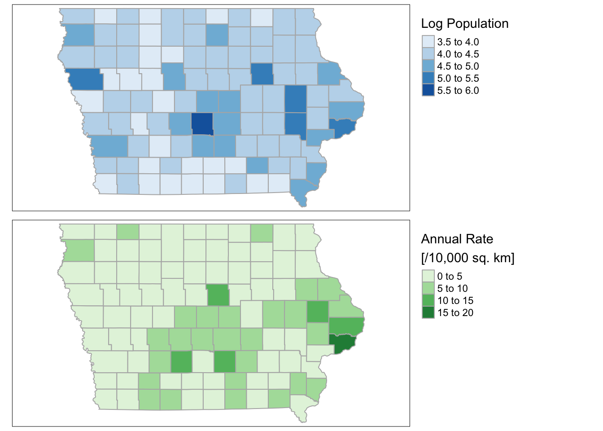
There appears some relationship. The non-spatial correlation between the two variables is obtained with the cor.test() function.
lpop <- Counties.sf$lpop
rate <- as.numeric(Counties.sf$rate)
cor.test(lpop, rate)##
## Pearson's product-moment correlation
##
## data: lpop and rate
## t = 3.8318, df = 97, p-value = 0.0002258
## alternative hypothesis: true correlation is not equal to 0
## 95 percent confidence interval:
## 0.1779088 0.5225915
## sample estimates:
## cor
## 0.3625861The bi-variate spatial autocorrelation is assessed using the Lee statistic. A formal non-parametric test under the null hypothesis of no bi-variate spatial autocorrelation is done using a Monte Carlo simulation.
nbs <- spdep::poly2nb(Counties.sf)
wts <- spdep::nb2listw(nbs)
lee_stat <- spdep::lee(lpop, rate,
listw = wts,
n = length(nbs))
lee_stat$L## [1] 0.2049081spdep::lee.mc(lpop, rate, listw = wts, nsim = 9999)##
## Monte-Carlo simulation of Lee's L
##
## data: lpop , rate
## weights: wts
## number of simulations + 1: 10000
##
## statistic = 0.20491, observed rank = 10000, p-value = 1e-04
## alternative hypothesis: greaterFinally you map out the local variation in the bi-variate spatial autocorrelation.
Counties.sf$localL <- lee_stat$localL
tmap::tm_shape(Counties.sf) +
tmap::tm_fill("localL",
title = "Local Bivariate\nSpatial Autocorrelation") +
tmap::tm_borders(col = "gray70") +
tmap::tm_layout(legend.outside = TRUE)## Variable(s) "localL" contains positive and negative values, so midpoint is set to 0. Set midpoint = NA to show the full spectrum of the color palette.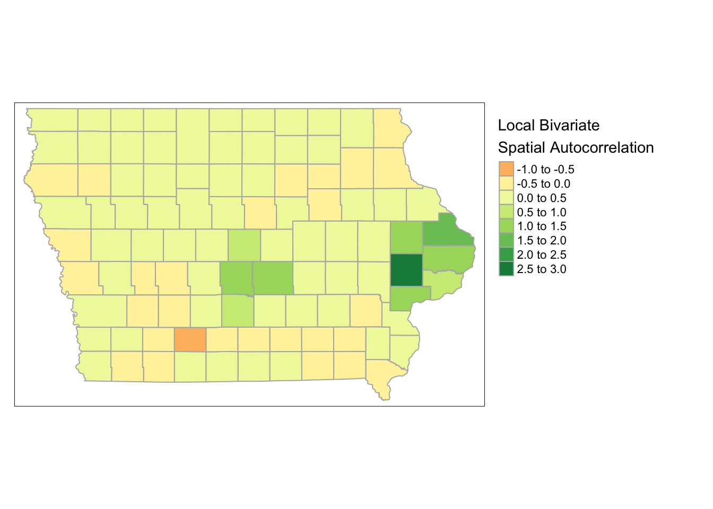
What might cause this? Compare with Kansas.
Also, compare local Lee with local Moran.
Ii_stats <- spdep::localmoran(rate,
listw = wts)
Counties.sf$localI = Ii_stats[, 1]
tmap::tm_shape(Counties.sf) +
tmap::tm_borders(col = "gray70") +
tmap::tm_fill(col = "localI",
title = "Local Autocorrelation",
palette = "Purples") +
tmap::tm_layout(legend.outside = "TRUE")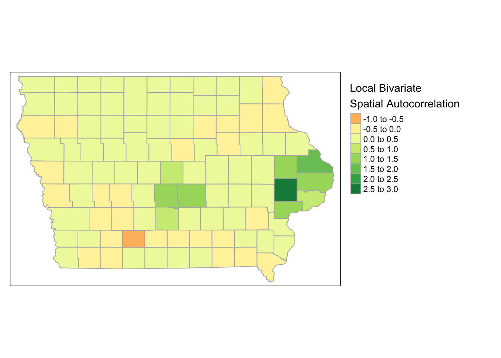